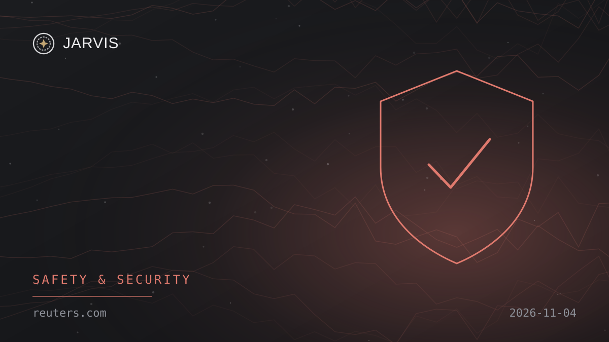
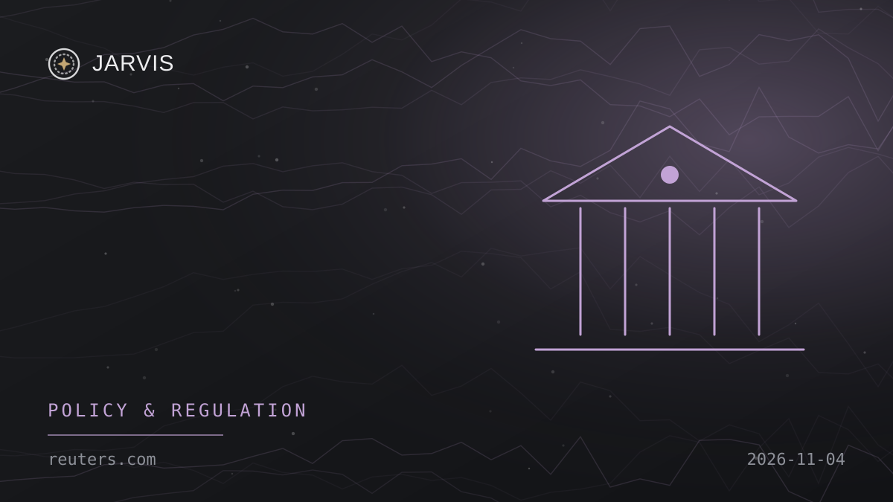

Wednesday, 4 November 2026
Nº 003Hello, Boss
Here’s your verified AI update for Wednesday, 4 November 2026.
Today’s brief3 Nov, 07:30 → 4 Nov, 07:30 Doha
3Stories
2Global
1India
Enable JavaScript to listen.


Explore Global
2 storiesAll 2 Global stories are in the top stories above.
Explore India
1 storyAll 1 India story is in the top stories above.
None of today’s stories match your topics. Edit them in Profile.
Explore
No stories match. Try another word or source.
Saved
Tap the bookmark on any story to keep it here. Saved stories stay in this browser only.
Archive
7NovOpenAI closes $11 billion in funding, Reuters source saysNº 006 · 3 global · 2 India6NovGoogle launches Gemini Omni 1.2 Flash with 15-second video generationNº 005 · 3 global · 1 India5NovNooks secures $500 million commitment to expand AI sales toolsNº 004 · 2 global · 1 India4NovOpenAI staff raised security concerns for years, Reuters reportsNº 003 · 2 global · 1 India3NovAnthropic says an unreleased Claude model built working exploit chains in five major platformsNº 002 · 6 global · 3 India2NovMarvell announces $115 billion Lumentum deal for AI connectivityNº 001 · 3 global · 2 India
Profile
Arunkumar Thamilarasu
Publisher · JARVIS AI NEWS
Hey Boss, it seems like you haven’t picked any topics yet.
Share & feedback
App settings
NotificationsNews alerts on this device
Notification setup is being checked.
On iPhone or iPad, add JARVIS to your Home Screen, open it there, then enable notifications. Alerts are delivered by OneSignal after you opt in.
About